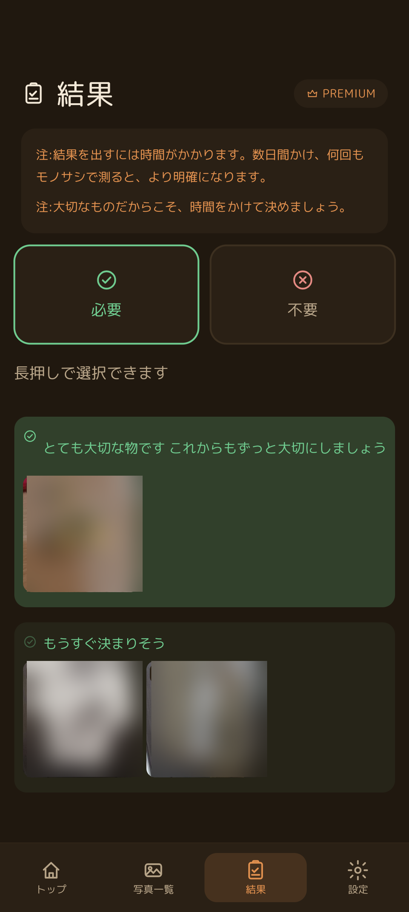
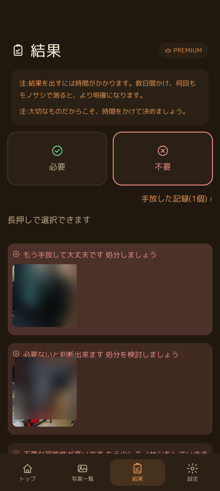
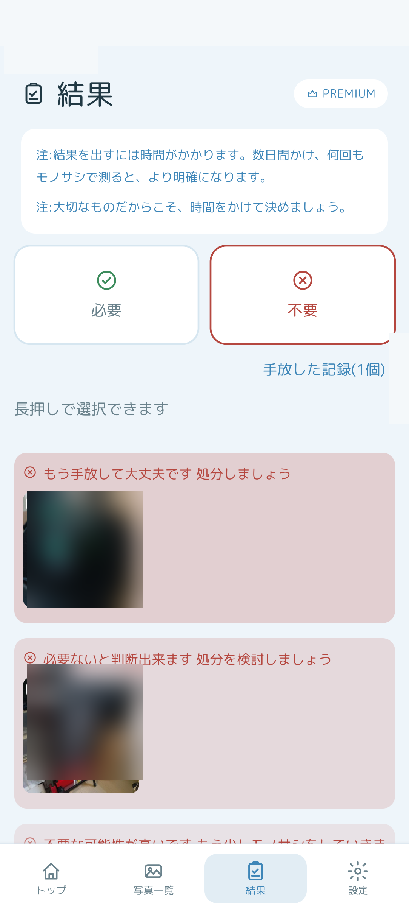
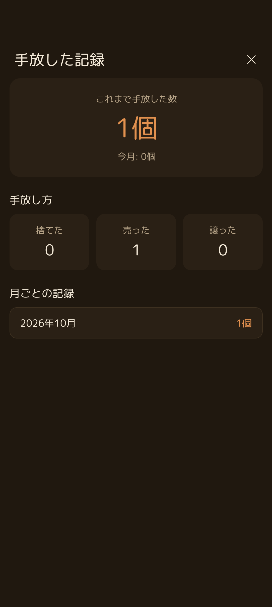

⚖️ 「必要」と「不要」の2大区分
下部ナビゲーションの「結果」タブを開くと、上部に「必要」と「不要」の大きな2つの切り替えボタンがあります。スワイプを重ねて判断の方向性が定まってきた写真が、それぞれのタブに自動で分類されます。
⏳ 注: 結果を出すには時間がかかります
数日間かけ、何回もモノサシで測ると、より明確になります。大切なものだからこそ、焦らず時間をかけて決めましょう。
数日間かけ、何回もモノサシで測ると、より明確になります。大切なものだからこそ、焦らず時間をかけて決めましょう。

「必要」タブ：残したい物・大切な物が確信度別にグループ分けされます

「不要」タブ：処分を検討できる物がはっきりとリストアップされます
| タブ | 表示されるグループ見出し | 意味・状態 |
|---|---|---|
| 必要 | とても大切な物です これからもずっと大切にしましょう | 迷いなく「必要」と確信できた持ち物。自信を持って手元に残しましょう。 |
| 必要 | もうすぐ決まりそう | 「必要」側に大きく傾きつつある持ち物。あと数回測れば確定します。 |
| 不要 | もう手放して大丈夫です 処分しましょう | 心がすっかり納得できている状態。ゴミに出す、売る、譲るなど処分へ進めましょう。 |
| 不要 | 必要ないと判断出来ます 処分を検討しましょう | 「不要」の確信度が高まっている持ち物。そろそろ処分方法を考え始めましょう。 |

ライトモードでも柔らかい色合いで判断を後押しします
📦 「手放した記録」で達成感を可視化
不要タブの右上にある「手放した記録 >」リンクをタップすると、これまでに実際に手放した持ち物の集計画面が開きます。

これまでに手放した総数、手放し方の内訳、月ごとの記録を確認できます
STEP 1
これまで手放した数 ＆ 今月の成果
「1個」「今月: 0個」のように大きな文字で表示され、片付けの努力と成果を実感できます。
STEP 2
手放し方の3分類（捨てた・売った・譲った）
ただ捨てるだけでなく、「フリマアプリで売った」「友人に譲った」など、エシカルな手放し方も個別に集計されます。
STEP 3
月ごとの記録
「2026年10月 1個」のように過去の月別実績が並び、継続的な断捨離のモチベーションにつながります。
❓ 判定結果に関するFAQ
Q 何回測っても「未判定」のまま残っている写真があります。
その写真は、あなたの中で「必要」と「不要」の気持ちが激しくせめぎ合っている証拠です。無理にどちらかへ倒そうとせず、そのまま何度もモノサシを繰り返してみてください。ある日ふと直感が定まる瞬間が訪れます。
Q 手放した記録に登録すると、写真はどうなりますか？
手放した持ち物は一覧からアーカイブされ、スワイプ判定には出題されなくなります。過去の成果として記録にのみ残ります。